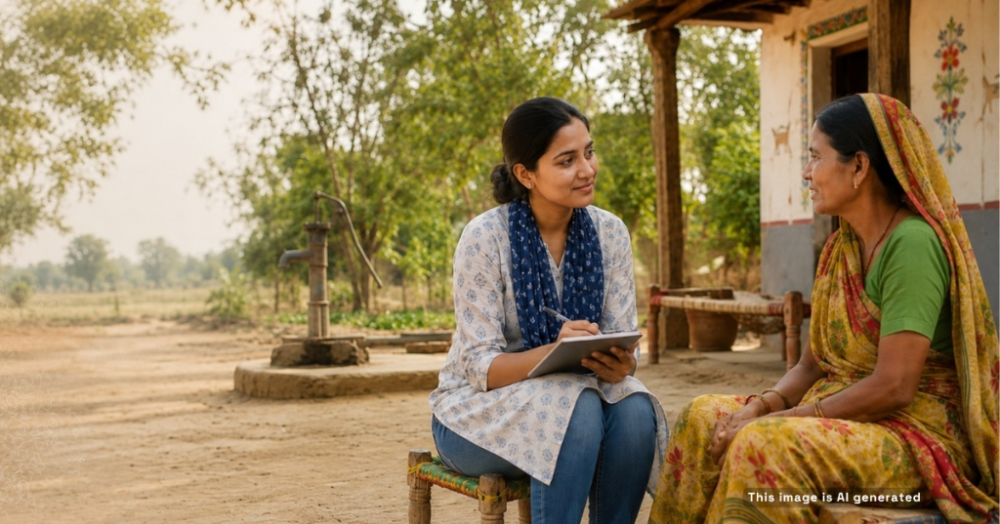

We begin with curiosity and a focus on the questions that matter most to our clients. Through rigorous social science research, field data collection, and diagnostic studies, we uncover the economic, institutional, and behavioral drivers that shape systems and outcomes.
From measuring the social and economic impact of CSR investments to mapping informal water and sanitation markets, and from analyzing the policy and institutional conditions for digital public infrastructure (DPI) adoption to understanding citizen trust in data systems, our work helps clients see their operating context clearly.
We design studies that are rigorous yet practical, delivering insight at the speed and scale decision-makers need — helping our partners learn, adapt, and act with confidence.

Four foundational pillars underpinning our research practice across global programs. Explore each methodology below.
We go beyond desk research. Athena works across the digital and human layers of the data ecosystem to understand how people live, decide, and interact with systems. With strong field networks and smart digital tools, we help illuminate context and practice.
We embed ethics, inclusion, and data protection into every stage of the research process, ensuring evidence is collected responsibly, safely, and with dignity.
Every study is designed to answer a strategic question. We focus on what the evidence means, and not just what it says, so clients can make informed decisions quickly and confidently — turning evidence into clarity, direction, and action.
We combine lean research approaches with digital tools and local execution networks to deliver fast, cost-efficient, and reliable data — without compromising on quality. We deliver rigorous insight at the pace your decisions demand.